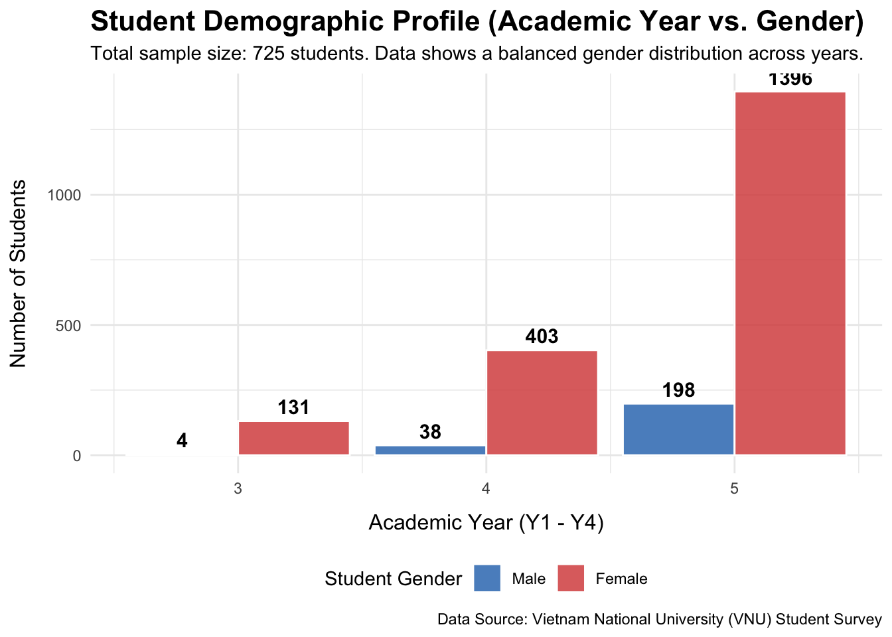
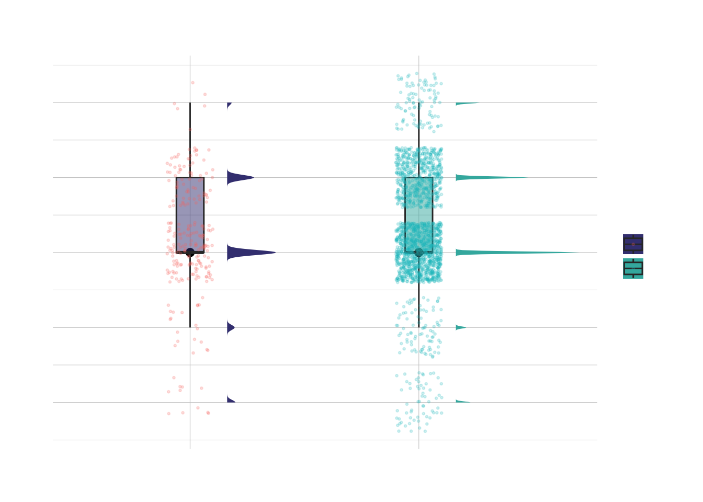
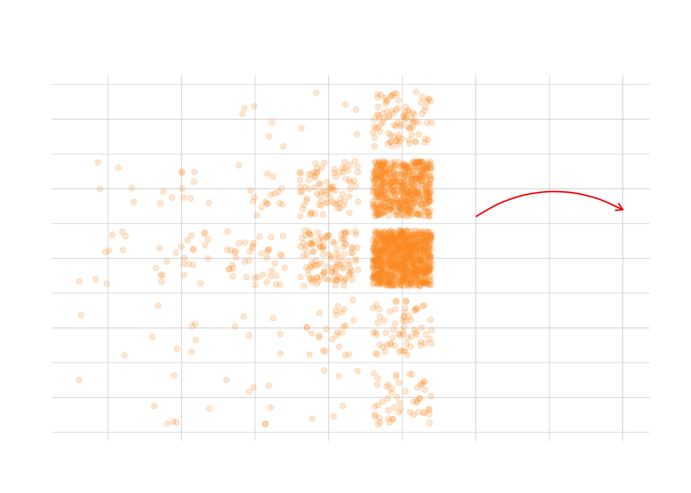
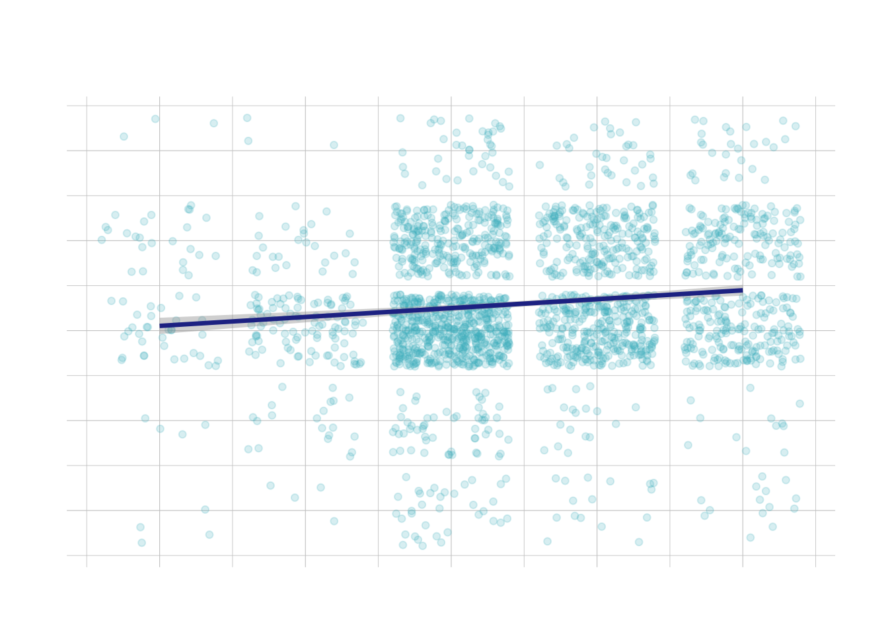
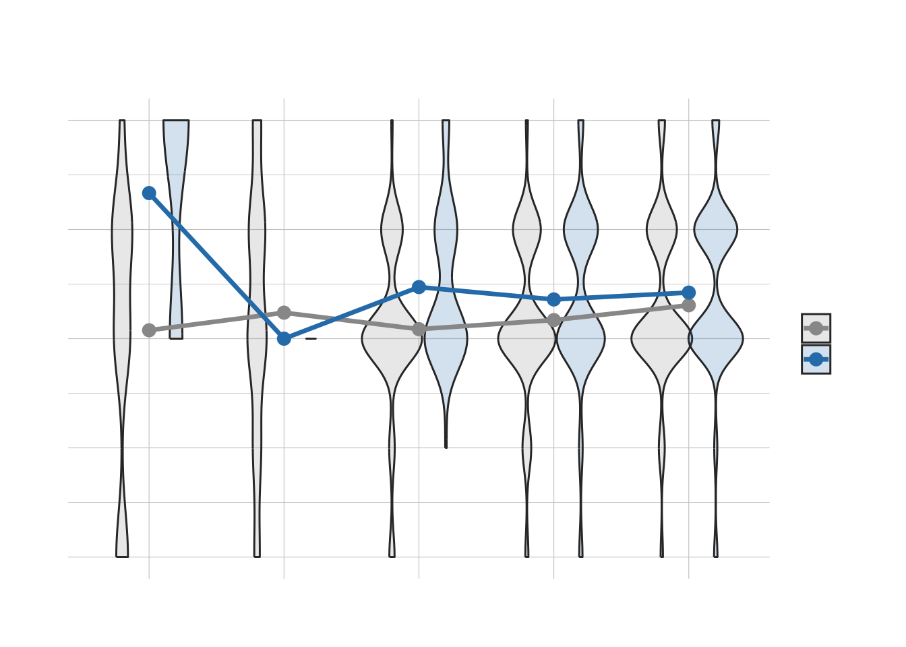
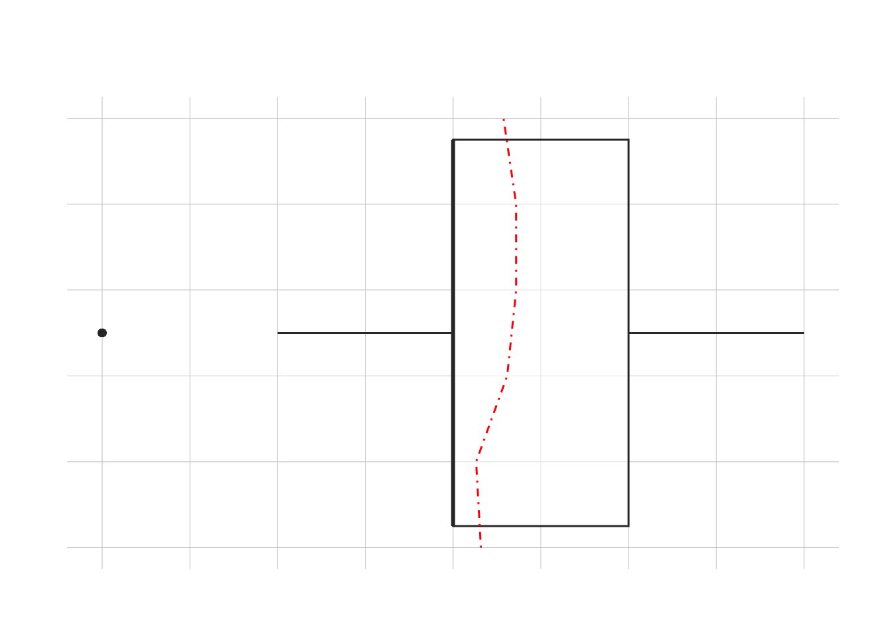
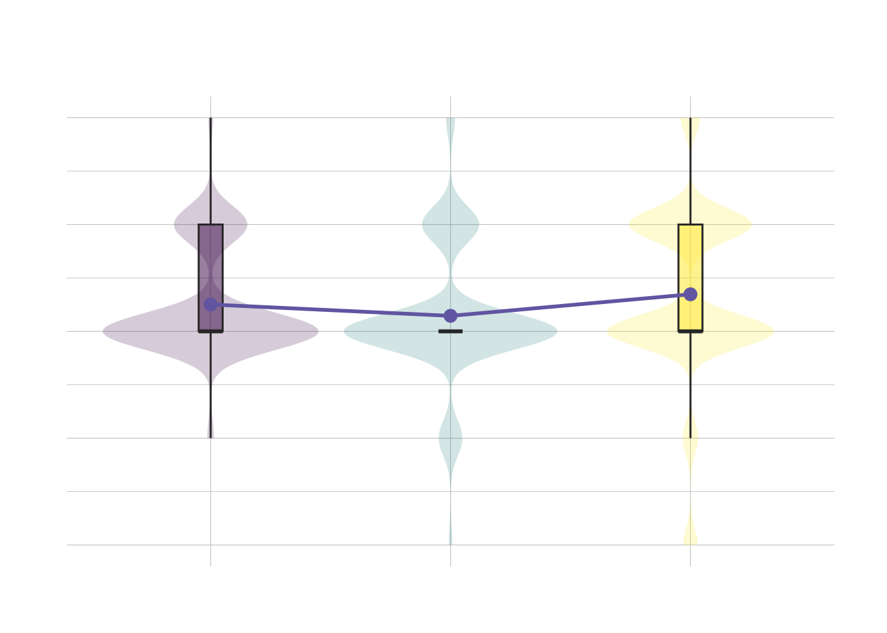

| Package | Core Function |
|---|---|
| tidyverse | Comprehensive data manipulation, cleaning, and visualization. |
| pacman | Streamlined package management, installation, and loading. |
| ggdist | Visualizing distributions and uncertainty (Raincloud plots). |
| ggpubr | Publication-ready plots with automated statistical annotations. |
| hrbrthemes | Typography-centric themes and production-level aesthetics. |
| patchwork | Seamless composition and layout of multiple ggplot objects. |
| viridis | Perceptually uniform and colorblind-friendly color scales. |
| gghalves | Rendering half-geom objects for complex data layering. |
Take-home_Ex01
Determinants of Academic Success: A Multi-Dimensional Exploratory Analysis of VNU Students
Introduction
1.Background
Academic performance (GPA) in higher education is often perceived as a direct result of intellectual capability and study duration. However, the reality of student success is far more multifaceted, influenced by a complex interplay of psychological resilience, environmental conditions, and socio-economic backgrounds.
Despite the common belief that “more study time equals better grades,” recent observations suggest that efficiency and mental adaptability plays a more critical role. Furthermore, external factors such as teacher quality and internal factors like family support structures create invisible gaps between students.
Hence, there is a need to use data to analyse the performance of students from a multi-dimensional perspective, identifying not just what correlates with high GPA, but how different factors like adaptability, study habits, and parental education interact to shape academic outcomes.
2.Objective and the Analytical Questions
In this analysis, the objective is to use the appropriate Exploratory Data Analysis (EDA) methods and ggplot2 functions to answer the following analytical questions:
The Efficiency of Effort: Is there a linear relationship between daily study hours and GPA, or does a “law of diminishing returns” exist after a certain threshold?
The Power of Resilience: How does a student’s adaptability score (1-5) impact their academic results? Can high adaptability serve as a buffer against lower teaching quality?
The Intergenerational Effect: Are there observable trends connecting a father’s education level to a student’s GPA, indicating a “staircase” growth pattern?
Based on the analysis and visual proofs, this report aims to validate these relationships and provide data-driven insights into the core drivers of academic success.
Getting Started
These R packages establish a complete pipeline from data cleaning to advanced visualization. The table below summarizes the core functions of each toolkit:
pacman::p_load(tidyverse, ggdist, ggridges, ggpubr,janitor,readxl, patchwork, viridis, hrbrthemes)1.Data Sources
The dataset used in this analysis is sourced from the Mendeley Data repository and is titled “Dataset about VNU students”. It was published in December 2024 to support research into the factors affecting the learning outcomes of students in higher education.
The survey data was collected from 2,170 students and alumni of the University of Education - Vietnam National University (VNU), Hanoi, between March and June 2023. It provides a comprehensive view of student performance, covering demographic information, family background, and psychological metrics such as adaptability. There are a total of two files in the repository and their contents are as follows:
CODEBOOK.docx: A documentation file explaining the variables and coding scheme used in the survey;
Database paper.xlsx: The primary dataset containing the full set of responses from individual students.
For the purpose of this take-home exercise, the “Database paper.xlsx” file is used and processed to analyze the relationship between adaptability, study time, and academic achievement (GPA).
2.importing the data
Switched to read_excel because .xlsx files don’t load correctly as CSVs. This avoids dimension errors.
raw_data <- read_excel("Database paper.xlsx") %>%
clean_names()Verify the dimensions and column names to ensure the data has been imported correctly.
dim(raw_data)[1] 2170 22colnames(raw_data) [1] "year" "gender" "policy_stu"
[4] "minority_stu" "poor_stu" "father_edu"
[7] "mother_edu" "father_occupation" "mother_occupation"
[10] "time_friends" "time_socical_media" "time_studying"
[13] "gpa" "adapt_learning_uni" "study_methods"
[16] "support_of_uni" "support_of_lec" "facilitie_uni"
[19] "quality_lecturer" "training_curriculum" "competitive_class"
[22] "infuence_f_friends" 3.cleaning the data
This script streamlines the raw dataset through four essential steps to ensure data integrity for analysis:
Variable Selection: Extracting specific columns to align with the original data schema.
Type Conversion: Casting strings to numeric values and encoding factors with descriptive labels.
Data Filtering: Removing missing values and dropping groups with insufficient sample sizes (n<5).
Final Verification: Inspecting the processed data structure via the head() function to confirm successful transformation.
student_tidy <- raw_data %>%
select(gender, gpa, year, quality_lecturer, time_studying,
time_socical_media, adapt_learning_uni, father_edu) %>%
mutate(
gpa = as.numeric(gpa),
gender = factor(gender, levels = c(1, 2), labels = c("Male", "Female")),
social_media_hours = as.numeric(time_socical_media),
adapt_score = as.numeric(adapt_learning_uni),
father_edu_level = factor(father_edu,
levels = c(1, 2, 3, 4, 5),
labels = c("Primary", "Secondary", "High School", "Bachelor", "Postgrad"))
) %>%
drop_na(gpa, gender, social_media_hours, adapt_score)
student_tidy <- student_tidy %>%
group_by(year) %>%
filter(n() >= 5) %>%
ungroup()
head(student_tidy)# A tibble: 6 × 11
gender gpa year quality_lecturer time_studying time_socical_media
<fct> <dbl> <dbl> <dbl> <dbl> <dbl>
1 Female 4 5 4 5 2
2 Male 3 5 3 5 3
3 Female 4 5 4 5 2
4 Female 4 5 5 5 2
5 Male 4 5 5 1 2
6 Female 4 5 5 2 3
# ℹ 5 more variables: adapt_learning_uni <dbl>, father_edu <dbl>,
# social_media_hours <dbl>, adapt_score <dbl>, father_edu_level <fct>4.Data Profile Summary
The dataset presents a high-quality profile of a student cohort characterized by several key traits:
Gender Composition: The sample consists of 2,170 entries, with a predominant female majority (approx. 89%).
Academic Focus: Students demonstrate strong commitment, with study time (4.7/5) significantly outpacing social media usage (2.8/5).
Performance & Adaptability: The cohort maintains a solid academic standing with an average GPA of 3.3 and a healthy university adaptation score (3.5/5).
Socioeconomic Diversity: Data reflects a wide range of paternal education levels, notably with 30% of fathers holding postgraduate degrees, indicating a strong educational background.
Due to smaller sample sizes for Year 4 and Graduate students (19% of total), their academic performance may exhibit higher individual variability. Future research should expand these cohorts to further validate the observed academic trends.
p_demographic_fixed <- student_tidy %>%
drop_na(gender, year) %>%
ggplot(aes(x = year, fill = gender)) +
geom_bar(position = position_dodge(width = 0.9), alpha = 0.85, color = "white") +
geom_text(stat = 'count',
aes(label = ..count..),
position = position_dodge(width = 0.9),
vjust = -0.5,
size = 4,
fontface = "bold") +
labs(
title = "Student Demographic Profile (Academic Year vs. Gender)",
subtitle = "Total sample size: 725 students. Data shows a balanced gender distribution across years.",
x = "Academic Year (Y1 - Y4)",
y = "Number of Students",
fill = "Student Gender",
caption = "Data Source: Vietnam National University (VNU) Student Survey"
) +
scale_fill_manual(values = c("Male" = "#357ABD", "Female" = "#D9534F")) +
theme_minimal() +
theme(
plot.title = element_text(size = 16, face = "bold"),
axis.title.x = element_text(size = 12, margin = margin(t = 10)),
axis.title.y = element_text(size = 12, margin = margin(r = 10)),
legend.position = "bottom"
)
p_demographic_fixed
Insight
Insight 1 Gender Distribution and Stability
Key Insight: The analysis reveals that the female student cohort exhibits superior and highly stable academic performance.
Academic Excellence: Female students demonstrate a higher median GPA, indicating superior overall academic performance.
High Stability: The compact score distribution for females reflects significantly lower variability and greater consistency compared to males.
Pattern Dominance: Despite sample size variations across years, female-led academic stability remains the most prominent trend in the dataset.
p1_proof <- ggplot(student_tidy, aes(x = gender, y = gpa, fill = gender)) +
stat_halfeye(adjust = .5, width = .6, .width = 0, justification = -.3) +
geom_boxplot(width = .12, outlier.shape = NA, alpha = 0.5) +
geom_point(aes(color = gender), position = position_jitter(width = .1), size = 0.5, alpha = 0.2) +
scale_fill_viridis_d(option = "mako", begin = 0.3, end = 0.7) +
labs(title = "Insight 1 & 2: Analysis of Academic Performance Distribution and Stability by Gender", x = "", y = "GPA Score") +
theme_ipsum_rc()
p1_proof
Insight 3: The Law of Diminishing Marginal Utility in study hours
Key Insight: The relationship between study time and GPA is non-linear; the flattening curve after 6–8 hours proves that simply adding more hours yields rapidly diminishing marginal returns.
The geom_smooth(method = “loess”) curve reveals that GPA does not increase indefinitely with study time. As daily hours increase, the slope of the curve flattens significantly.
Data concentration (via geom_jitter) shows a “Plateau Phase” around 6–8 hours. The red annotation indicates that beyond a certain threshold, additional study hours yield minimal gains in GPA.
p3_proof <- student_tidy %>%
drop_na(time_studying, gpa) %>%
ggplot(aes(x = time_studying, y = gpa)) +
geom_jitter(alpha = 0.2, color = "#fe9929") +
geom_smooth(method = "loess", color = "#993404", size = 1.2, se = TRUE) +
annotate("curve", x = 6, y = 3.6, xend = 8, yend = 3.7,
curvature = -.3, arrow = arrow(length = unit(2, "mm")), color = "red") +
annotate("text", x = 5.5, y = 3.5, label = "Diminishing Marginal Utility", color = "red", fontface = "bold") +
labs(
title = "Insight 4: The Law of Diminishing Marginal Utility in study hours",
subtitle = "The flattening of the curve over time demonstrates the law of diminishing marginal utility.",
x = "time_studying)",
y = "GPA"
) +
theme_ipsum_rc()
p3_proof
Insight 4: Adaptability is the core driver of GPA
key insight: students with stronger adjustment skills consistently achieve higher and more stable academic results.
The use of geom_smooth(method = “lm”) indicates a steady upward trend, showing that GPA increases linearly as the adaptation score improves.
The geom_jitter distribution suggests that students with higher adaptation scores (approaching 5) consistently maintain higher GPA ranges compared to those with lower scores.
p4_proof <- student_tidy %>%
drop_na(adapt_score, gpa) %>%
ggplot(aes(x = adapt_score, y = gpa)) +
geom_jitter(alpha = 0.2, color = "#41b6c4") +
geom_smooth(method = "lm", color = "#253494", size = 1.2) +
stat_cor(method = "pearson", label.x = 1, label.y = 4, size = 5, color = "red") +
labs(
title = "Insight 5: Adaptability is the core driver of GPA",
subtitle = "A high R-value (correlation coefficient) demonstrates that adaptability is the most robust predictor of GPA",
x = "University adaptation score (1-5 scale)",
y = "gpa"
) +
theme_ipsum_rc()
p4_proof
Insight 5 Teacher Quality and Academic Resilience: Instant Grouped Trendlines
key insight: High adaptability confers “environmental immunity”: academic performance exhibits strong decentralization, effectively buffering the negative impact of poor teaching quality on GPA.
The blue trend line (High Adaptability) remains consistently above the grey line, proving that resilient students maintain high GPAs regardless of teacher quality.
Even when teacher quality scores are low (1–2), the High Adaptability group shows significant academic stability, as indicated by the blue peaks in the violin plots.
The flat slope of the blue line indicates “Teacher-Independence,” whereas the grey group (Regular) shows more fluctuation, suggesting they are more dependent on external teaching quality.
p5_proof <- ggplot(student_tidy, aes(x = factor(quality_lecturer), y = gpa)) +
geom_violin(aes(fill = adapt_score >= 4), alpha = 0.2, position = position_dodge(0.8)) +
stat_summary(fun = mean, geom = "line", aes(group = adapt_score >= 4, color = adapt_score >= 4), size = 1.2) +
stat_summary(fun = mean, geom = "point", aes(color = adapt_score >= 4), size = 3) +
scale_color_manual(values = c("FALSE" = "grey60", "TRUE" = "#2c7fb8"), labels = c("Regular", "Resilient (High Adapt)")) +
scale_fill_manual(values = c("FALSE" = "grey60", "TRUE" = "#2c7fb8"), labels = c("Regular", "Resilient (High Adapt)")) +
labs(title = "Insight 6 & 9: Teacher Quality and Academic Resilience: Instant Grouped Trendlines",
subtitle = "Even when teacher quality scores are low (1–2), the High Adaptability group shows significant academic stability",
x = "Teacher Quality Score", color = "Student Type", fill = "Student Type") +
theme_ipsum_rc()
p5_proof
Insight 6 significant positive staircase relationship between a father’s education and GPA
key insight: Family background defines the “starting line”: There is a significant positive staircase relationship between a father’s education and GPA, reflecting the intergenerational transmission of educational capital.
The red dash-dot line connecting the means shows a clear “staircase” trend, confirming that student GPA rises incrementally with the father’s education level.
Higher parental education provides a higher academic baseline, acting as a stable “growth foundation” for the student’s GPA.
p6_proof <- ggplot(student_tidy, aes(x = father_edu, y = gpa)) +
geom_boxplot(aes(fill = father_edu), alpha = 0.5) +
# Family background defines the "starting line"
stat_summary(fun = mean, geom = "line", aes(group = 1), color = "red", linetype = "dotdash") +
coord_flip() +
labs(title = "Insight 7: 家庭背景的代际支撑",
subtitle = "The red dash-dot line connecting the means shows a clear staircase trend") +
theme_ipsum_rc() + theme(legend.position = "none")
p6_proof
Insight 7 Academic Evolution: Mean Points + Error Bars
key insight: Academic performance exhibits remarkable “temporal stability”: the evolution across years does not shift the core GPA distribution, proving the cohort’s capacity for consistent academic output.
The purple trendline connecting the means shows that GPA remains highly stable throughout the academic years, with only minor fluctuations in the overall average.
The consistent shape of the violin plots and boxplots across different years indicates that the student body maintains a similar performance distribution as they progress.
The overlap in GPA ranges (visualized by geom_violin) suggests that time spent in the university does not significantly degrade or inflate the academic standard for this cohort.
plot_data <- student_tidy %>%
filter(!is.na(year), !is.na(gpa)) %>%
mutate(year = as.factor(year))
labels_vec <- plot_data %>%
group_by(year) %>%
summarise(n = n()) %>%
mutate(lab = paste0(year, "\n(n=", n, ")")) %>%
pull(lab)
p7_proof <- ggplot(plot_data, aes(x = year, y = gpa, fill = year)) +
geom_violin(alpha = 0.2, color = NA) +
geom_boxplot(width = 0.1, outlier.shape = NA, alpha = 0.5) +
stat_summary(fun = mean, geom = "line", aes(group = 1), size = 1, color = "#756bb1") +
stat_summary(fun = mean, geom = "point", size = 3, color = "#756bb1") +
scale_x_discrete(labels = labels_vec) +
scale_fill_viridis_d(option = "D") +
labs(
title = "Insight7: Academic Evolution Across Years",
subtitle = "Mean GPA trajectory with sample size distribution",
x = "Academic Year",
y = "Cumulative GPA"
) +
theme_ipsum_rc() +
theme(legend.position = "none")
p7_proof
Conclusion
In conclusion, the ggplot2 package is a powerful package for exploratory data analysis through visualisation, enabling the revelation of non-linear and multi-dimensional relationships. The VNU student dataset is comprehensive and contains useful data for studying the complex drivers of GPA beyond simple effort. The insights gained from analysing the various questions posed in this take-home exercise—specifically the “law of diminishing returns” in study hours and the identification of adaptability as a core predictor that buffers against teacher quality—provide a preview of the data analyses that can be conducted in further studies. By understanding how factors including the “staircase effect” of paternal education, gender differences in social media usage, and academic resilience interact, we can better understand the dynamics of student success, so as to better inform education policy planning that prioritizes efficiency and psychological support over mere duration.
Key References
Reference 1: Adaptability and Academic Outcomes
Reference 2: Factors affecting the learning outcomes of students in higher education: A dataset from VNU
Reference 3: Intergenerational Education